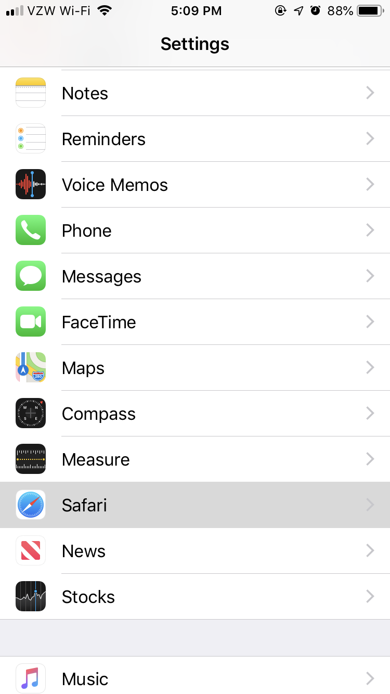
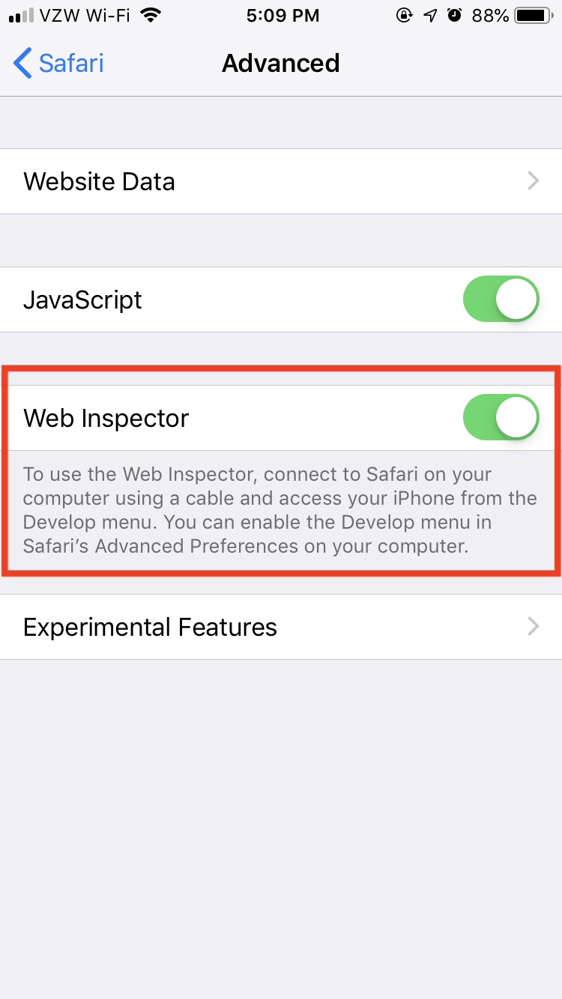
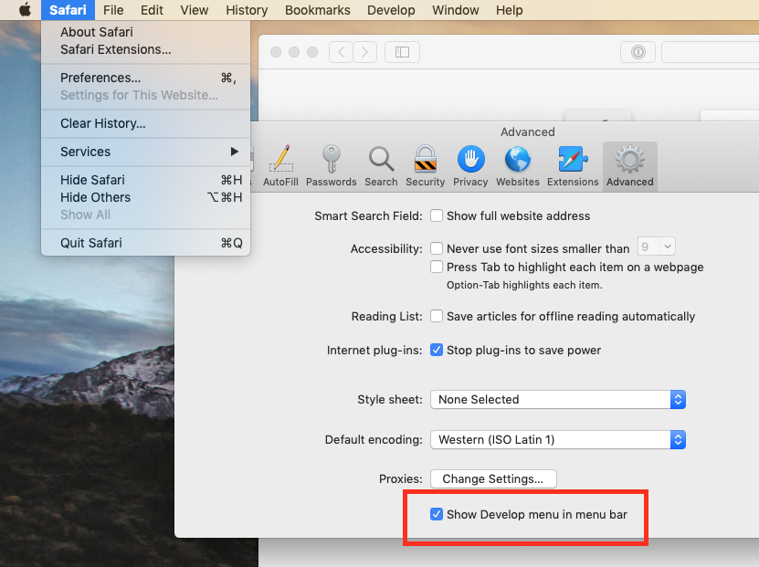
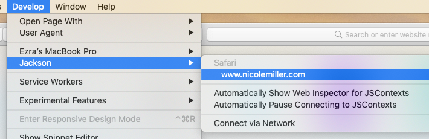
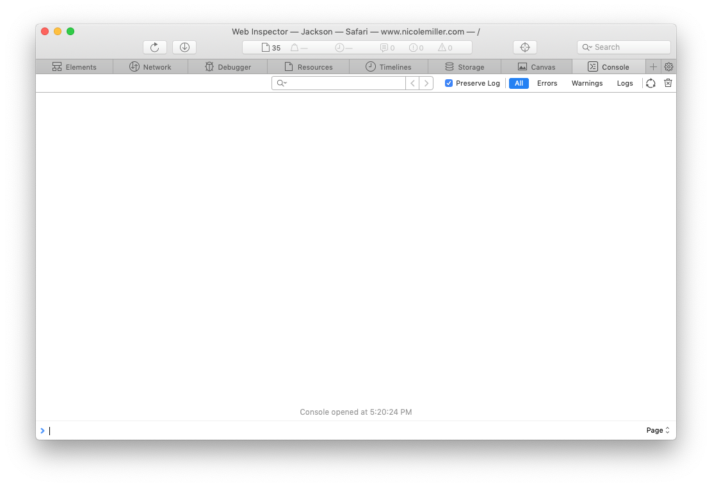
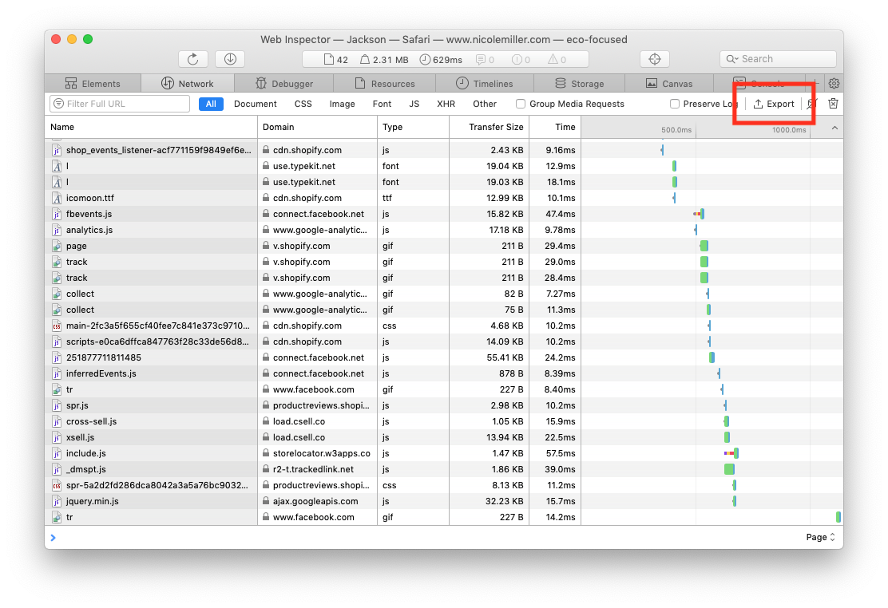

Determining how to replicate
We need to know under exactly what conditions the issue occurs. To help figure this out, it's helpful to know of any specific browser errors. You will need a MacOS device for these instructions.
Setup
Set up your iPhone
On your phone, go to Settings > Safari > Advanced and check Web Inspector.



Set up your Mac
Open Safari. Go to Safari > Preferences > Advanced and check Show Develop menu in menu bar.

Connect your iPhone to your Mac
Plug in your iPhone via USB cable, and select "Trust" on your iPhone (if you're prompted). Open up the desired site on Safari for iPhone.
⚠️ You must use Safari, not Chrome!
On your Mac, you should see your device under the Develop menu. Go to Develop > [Device Name] > [Site Name], replacing [Device Name] for your iPhone's name and [Site Name] for the name of the site you have open on your iPhone.

You should see the following screen:

Usage
Browse the site like normal. When the error occurs, do not refresh the page!
- Take screenshots of the console window (pictured above) and your phone's screen
- Navigate to the
Networktab (pictured below) and export its contents using theExportbutton at the upper right.
